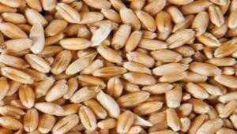
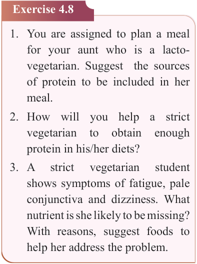
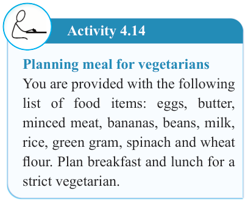

109


Food and Human Nutrition

Form Two


should also be included in meals for ovo-vegetarians.
(vi) Vegetable fats and oil should be used instead of animal fat when preparing food.
(vii) Seasonings
and
flavourings
should be added to vegetarian meals to make them tasty and appealing.
Suggested suitable dishes for strict vegetarians
Chick pea curry, stewed beans, mixed vegetable salads, mixed vegetables soup, stewed eggplant with groundnuts sauce, curried lentils, stewed pasta with chickpea, stewed peas, vegetable rice, white bean soup, spiced tea, maize and kidney beans, mixed fruit juice, mixed fruit salad, enriched porridge, stewed green grams, whole grain toasted sandwich with vegetables, stewed banana with beans, and stewed potatoes with peas.
Activity 4.14
Planning meal for vegetarians
You are provided with the following list of food items: eggs, butter, minced meat, bananas, beans, milk, rice, green gram, spinach and wheat flour. Plan breakfast and lunch for a strict vegetarian.
Exercise 4.8
1. You are assigned to plan a meal for your aunt who is a lacto-
vegetarian. Suggest the sources
of protein to be included in her meal.
2. How will you help a strict
vegetarian
to
obtain
enough
protein in his/her diets?
3. A
strict
vegetarian
student
shows symptoms of fatigue, pale conjunctiva and dizziness. What nutrient is she likely to be missing?
With reasons, suggest foods to help her address the problem.
Occasional meals
These meals are prepared, cooked and served for a special event or festival.
The meals depend on the event and type of service provided. Examples of special occasions include birthdays, weddings, religious events and social gatherings.
Factors to consider when planning meals for special occasions
Special occasion meals should be planned carefully as they are eaten by diverse people. Therefore, the meal should suit all the invitees. The following are the factors to consider when planning meals for special occasions.
The menu: The list of dishes to be included on the menu will depend on the kind of guests invited and the type
17/09/2025 16:30